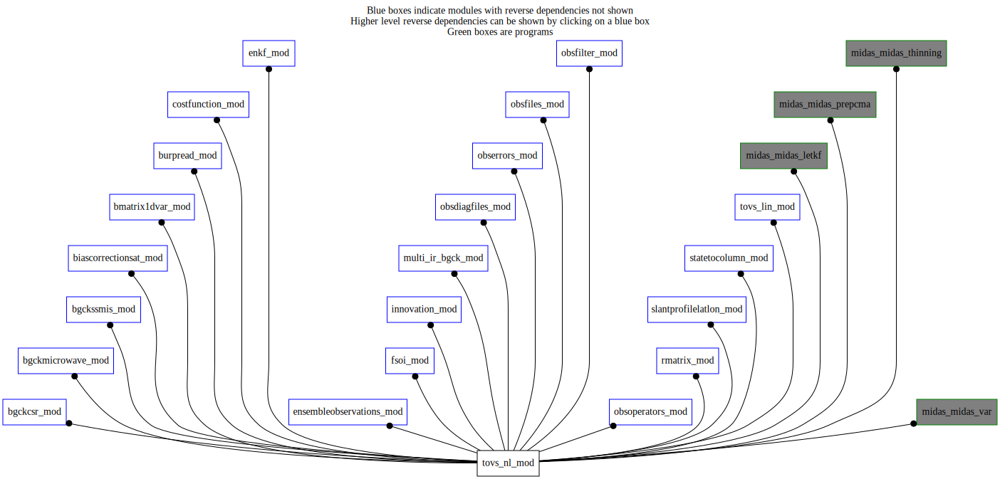

Dependency Diagrams:
Direct Dependency Diagram¶
 Reverse Dependency Diagram¶
Description
MODULE tovs_nl (prefix=’tvs’ category=’5. Observation operators’)
- Purpose
Derived types, public variables and procedures related to the nonlinear version of RTTOV
Quick access
- Types
- Variables
tvs_channeloffset,tvs_coef_scatt,tvs_coefs,tvs_debug,tvs_defaultemissivity,tvs_emissivity,tvs_headerindex,tvs_ichan,tvs_ichanmpiglobal,tvs_instrumentname,tvs_instruments,tvs_isreallypresent,tvs_isreallypresentmpiglobal,tvs_listsensors,tvs_lsensor,tvs_maxchannelnumber,tvs_maxnumberofchannels,tvs_maxnumberofsensors,tvs_mwallskyassim,tvs_mwinstrumusingclw_tl,tvs_mwinstrumusinghydrometeors_tl,tvs_nchan,tvs_nchanmpiglobal,tvs_nobtov,tvs_nsensors,tvs_nummwinstrumusingclw,tvs_nummwinstrumusinghydrometeors,tvs_opts,tvs_opts_scatt,tvs_platforms,tvs_radiance,tvs_satellitename,tvs_satellites,tvs_surfaceparameters,tvs_tovsindex,tvs_transmission,tvs_useo3climatology- Routines
broadcasti41darray(),broadcastr81darray(),broadcastr82darray(),ceres_ematrix(),comp_ir_emiss(),emi_sea(),emis_getiremissivity(),emis_read_climatology(),extractcmplx81darray(),extracti41darray(),extractr81darray(),extractr82darray(),extractr83darray(),interp_sfc(),pcnt_box(),rejectobs(),sensors(),tvs_alloctransmission(),tvs_changedstypvalue(),tvs_cleanup(),tvs_countradiances(),tvs_deallocateprofilesnltlad(),tvs_fillprofiles(),tvs_getallidburptovs(),tvs_getchannelnumindexfromppp(),tvs_getchanprof(),tvs_getcommonchannelset(),tvs_getcorrectedsatelliteazimuth(),tvs_gethiremissivities(),tvs_getinstrumentid(),tvs_getlocalchannelindexfromchannelnumber(),tvs_getmwemissivityfromatlas(),tvs_getotheremissivities(),tvs_getplatformid(),tvs_getprofile(),tvs_isidburphyperspectral(),tvs_isidburpinst(),tvs_isidburptovs(),tvs_isinstrumallskyhuassim(),tvs_isinstrumallskyttassim(),tvs_isinstrumgeostationary(),tvs_isinstrumhyperspectral(),tvs_isinstrumusingclw(),tvs_isinstrumusinghydrometeors(),tvs_isnamegeostationary(),tvs_isnamehyperspectral(),tvs_mapinstrum(),tvs_mapsat(),tvs_printdetailledomfstatistics(),tvs_rttov(),tvs_rttov_read_coefs(),tvs_setup(),tvs_setupalloc(),updatecloudintovscloudprofile(),updatecloudintovsprofile(),validaterttovprofile(),validaterttovvariable()Needed modules
rttov_interfaces_mod: MODULE rttov_interfaces_mod (prefix=’’ category=’9. Global interfaces’)
rttov_types(rttov_coefs(),rttov_fast_coef(),rttov_scatt_coef(),rttov_options(),rttov_options_scatt(),rttov_profile(),rttov_profile_cloud(),rttov_radiance(),rttov_transmission(),rttov_chanprof(),rttov_emissivity())
rttov_const(platform_name(),nplatforms(),inst_name(),ninst(),inst_id_goesim(),inst_id_gmsim(),inst_id_mtsatim(),inst_id_amsua(),inst_id_mhs(),sensor_id_mw(),sensor_id_po(),platform_id_jpss(),platform_id_himawari(),platform_id_eos(),errorstatus_success(),mair(),mh2o(),mo3(),surftype_land(),surftype_seaice(),surftype_sea(),watertype_ocean_water(),ngases_max(),gas_id_mixed(),gas_unit_specconc(),interp_rochon_loglinear_wfn(),zenmax(),zenmaxv9(),o3min(),o3max(),tmin(),tmax(),qmin(),qmax(),elevmax(),wmax(),pmin(),pmax())
parkind1(jpim(),jplm())
rttov_fast_coef_utils_mod(set_pointers(),set_fastcoef_level_bounds())
rttov_solar_refl_mod(rttov_refl_water_interp())
midasmpi_mod: MODULE midasMpi_mod (prefix=’mmpi’ category=’8. Low-level utilities and constants’)
codtyp_mod: MODULE codtyp_mod (prefix=’codtyp’ category=’8. Low-level utilities and constants’)
mpi
utilities_mod: MODULE utilities_mod (prefix=’utl’ category=’8. Low-level utilities and constants’)
obsspacedata_mod: MODULE obsSpaceData_mod (prefix=’obs’ category=’6. High-level data objects’)
earthconstants_mod: MODULE earthConstants_mod (prefix=’ec’ category=’8. Low-level utilities and constants’) Prefixes: ec_ (Earth constants), for miscellaneous values from diverse sources
mathphysconstants_mod: MODULE MathPhysConstants_mod (prefix=’mpc’ category=’8. Low-level utilities and constants’)
ozoneclim_mod: MODULE ozoneClim_mod (prefix=’ozo’ category=’5. Observation operators’)
columndata_mod: MODULE columnData_mod (prefix=’col’ category=’6. High-level data objects’)
mod_rttov_emis_atlas
verticalcoord_mod: MODULE verticalcoord (prefix=’vco’ category=’7. Low-level data objects’)
codeprecision_mod: MODULE codePrecision_mod (prefix=’pre’ category=’8. Low-level utilities and constants’)
humiditylimits_mod: MODULE humidityLimits_mod (prefix=’qlim’ category=’4. Data Object transformations’)
interpolation_mod: MODULE interpolation_mod (prefix=’int’ category=’4. Data Object transformations’)Types
- type tovs_nl_mod/surface_params¶
- Type fields
% albedo [real ] :: surface albedo (0-1)
% ice [real ] :: ice cover (0-1)
% ltype [integer ] :: surface type (1,…,20)
% pcnt_reg [real ] :: water percentage in an area around profile (0-1)
% pcnt_wat [real ] :: water percentage in pixel containing profile (0-1)
% snow [real ] :: snow cover (0-1)
Variables
- tovs_nl_mod/tvs_channeloffset (100) [integer,public]¶
BURP to RTTOV channel mapping offset
- tovs_nl_mod/tvs_coef_scatt (*) [rttov_scatt_coef,allocatable/public]¶
rttovscatt coefficients
- tovs_nl_mod/tvs_coefs (*) [rttov_coefs,allocatable/public]¶
rttov coefficients
- tovs_nl_mod/tvs_debug [logical,public]¶
Logical key controlling statements to be executed while debugging TOVS only
- tovs_nl_mod/tvs_defaultemissivity [real,parameter/public]¶
- tovs_nl_mod/tvs_emissivity (*,*) [real,allocatable/public]¶
Surface emissivities organized by profiles and channels
- tovs_nl_mod/tvs_headerindex (*) [integer,allocatable/public]¶
Observation position in obsSpaceData header for each profile
- tovs_nl_mod/tvs_ichan (*,*) [integer,allocatable/public]¶
List of channels per instrument (local)
- tovs_nl_mod/tvs_ichanmpiglobal (*,*) [integer,allocatable/public]¶
List of channels per instrument (global)
- tovs_nl_mod/tvs_instrumentname (100) [character,public]¶
- tovs_nl_mod/tvs_instruments (100) [integer,public]¶
RTTOVinstrument ID’s (e.g., 3=AMSU-A; 4=AMSU-B; 6=SSMI; …)
- tovs_nl_mod/tvs_isreallypresent (*) [logical,allocatable/public]¶
Logical flag to identify instruments really assimilated (local)
- tovs_nl_mod/tvs_isreallypresentmpiglobal (*) [logical,allocatable/public]¶
Logical flag to identify instruments really assimilated (global)
- tovs_nl_mod/tvs_listsensors (*,*) [integer,allocatable/public]¶
Sensor list
- tovs_nl_mod/tvs_lsensor (*) [integer,allocatable/public]¶
Sensor number for each profile
- tovs_nl_mod/tvs_maxchannelnumber [integer,parameter/public]¶
Max. value for channel number
- tovs_nl_mod/tvs_maxnumberofchannels [integer,parameter/public]¶
Max. no. of channels (for one profile/spectra)
- tovs_nl_mod/tvs_maxnumberofsensors [integer,parameter/public]¶
Max no sensors to be used
- tovs_nl_mod/tvs_mwallskyassim [logical,public]¶
- tovs_nl_mod/tvs_mwinstrumusingclw_tl [logical,public]¶
- tovs_nl_mod/tvs_mwinstrumusinghydrometeors_tl [logical,public]¶
- tovs_nl_mod/tvs_nchan (*) [integer,allocatable/public]¶
Number of channels per instrument (local)
- tovs_nl_mod/tvs_nchanmpiglobal (*) [integer,allocatable/public]¶
Number of channels per instrument (global)
- tovs_nl_mod/tvs_nobtov [integer,public]¶
Number of tovs observations
- tovs_nl_mod/tvs_nsensors [integer,public]¶
Number of individual sensors.
- tovs_nl_mod/tvs_nummwinstrumusingclw [integer,public]¶
- tovs_nl_mod/tvs_nummwinstrumusinghydrometeors [integer,public]¶
- tovs_nl_mod/tvs_opts (*) [rttov_options,allocatable/public]¶
rttov options
- tovs_nl_mod/tvs_opts_scatt (*) [rttov_options_scatt,allocatable/public]¶
rttovscatt options
- tovs_nl_mod/tvs_platforms (100) [integer,public]¶
RTTOV platform ID’s (e.g., 1=NOAA; 2=DMSP; …)
- tovs_nl_mod/tvs_radiance (*) [rttov_radiance,allocatable/public]¶
radiances organized by profile
- tovs_nl_mod/tvs_satellitename (100) [character,public]¶
- tovs_nl_mod/tvs_satellites (100) [integer,public]¶
RTTOV satellite ID’s (e.g., 1 to 16 for NOAA; …)
- tovs_nl_mod/tvs_surfaceparameters (*) [surface_params,allocatable/public]¶
surface parameters
- tovs_nl_mod/tvs_tovsindex (*) [integer,allocatable/public]¶
Index in TOVS structures for each observation header in obsSpaceData
- tovs_nl_mod/tvs_transmission (*) [rttov_transmission,allocatable/public]¶
transmittances all profiles for HIR quality control
- tovs_nl_mod/tvs_useo3climatology [logical,public]¶
Determine if ozone model field or climatology is used
Subroutines and functions
- subroutine tovs_nl_mod/validaterttovvariable(value, variablename, obsspacedata, headerindex[, minimum_opt[, maximum_opt]])¶
- Purpose
check variable for validity for RTTOV-13, if invalid replace by acceptable value and reject
- Arguments
value [real ,inout] ::
’
variablename [character ,in] :: Name of the checked variable for output in listings
obsspacedata [struct_obs ,inout] :: obsSpaceData object
headerindex [integer ,in] ::
”
- Options
minimum_opt [real ,in,] :: Minimum acceptable value
maximum_opt [real ,in,] :: Maximum acceptable value
- Called from
- Call to
- subroutine tovs_nl_mod/validaterttovprofile(profile, profilename, minimum, maximum, obsspacedata, headerindex)¶
- Purpose
check profile for validity for RTTOV-13, if invalid replace by acceptable value(s) and reject
- Arguments
profile (*) [real ,inout] :: Vertical profile of input variables to check for validity
profilename [character ,in] :: Name of the checked profile for output in listings
minimum [real ,in] :: Minimum acceptable value
maximum [real ,in] :: Maximum acceptable value
obsspacedata [struct_obs ,inout] :: obsSpaceData object
headerindex [integer ,in] ::
”
- Called from
- Call to
- subroutine tovs_nl_mod/rejectobs(obsspacedata, headerindex)¶
- Purpose
reject all data corresponding to headerIndex
- Arguments
obsspacedata [struct_obs ,inout] :: obsSpaceData object
headerindex [integer ,in] :: Index of the observation in obsSpaceData header table
- Called from
validaterttovvariable(),validaterttovprofile(),tvs_setupalloc(),tvs_fillprofiles()- Call to
- subroutine tovs_nl_mod/tvs_setupalloc(obsspacedata)¶
- Purpose
Memory allocation for the non linear radiative transfer model variables.
- Arguments
obsspacedata [struct_obs ]
- Called from
- Call to
obs_numheader(),utl_checkallocationstatus(),obs_getheaderindex(),obs_headelem_i(),tvs_isidburptovs(),rejectobs(),tvs_mapsat(),utl_abort(),tvs_mapinstrum(),obs_bodyelem_i(),tvs_getchannelnumindexfromppp(),obs_bodyset_i(),tvs_isinstrumgeostationary(),tvs_getcommonchannelset(),tvs_isinstrumusingclw(),tvs_isinstrumusinghydrometeors(),utl_tmg_start(),tvs_rttov_read_coefs(),utl_tmg_stop()
- subroutine tovs_nl_mod/tvs_getprofile(profiles, profiletype[, cld_profiles_opt])¶
- Purpose
sets profiles as a pointer of type rttov_profile based on profileType equal to nl or tlad.
- Arguments
profiles (*) [rttov_profile ,inout,pointer]
profiletype [character ,in]
- Options
cld_profiles_opt (*) [rttov_profile_cloud ,inout,pointer]
- Called from
eob_setvertlocation(),irbg_doqualitycontrol(),tovs_rttov_avhrr_for_iasi(),tvslin_rttov_tl(),tvslin_rttov_ad(),tvs_fillprofiles()- Call to
- subroutine tovs_nl_mod/tvs_alloctransmission(nlevels)¶
- Arguments
nlevels [integer ,in]
- Called from
- Call to
- subroutine tovs_nl_mod/tvs_setup()¶
- Purpose
to read namelist NAMTOV, initialize the observation error covariance and setup RTTOV-12.
- Called from
- Call to
utl_isnamelistpresent(),utl_abort(),sensors(),tvs_getinstrumentid()
- subroutine tovs_nl_mod/tvs_cleanup()¶
- Purpose
release memory used by RTTOV-12.
- Call to
- subroutine tovs_nl_mod/tvs_deallocateprofilesnltlad()¶
- Purpose
release memory used by RTTOV-12.
- Called from
- Call to
- subroutine tovs_nl_mod/sensors()¶
- Purpose
Initialisation of the RTTOV-10 platform, satellite and instrument ID’s. Also set burp to RTTOV channel mapping offset. To verify and transfom the sensor information contained in the NAMTOV namelist into the variables required by RTTTOV-7: platform, satellite and instrument ID’s.
- Called from
- Call to
- subroutine tovs_nl_mod/tvs_getallidburptovs(idatyplistsize, idatyplist)¶
- Purpose
Function to return a list of all idatyp (a.k.a. codtyp) values for all possible radiance observations (according to the namelist)
- Arguments
idatyplistsize [integer ]
idatyplist (*) [integer ]
- Called from
bcs_dumpbiastosqliteafterthinning(),diaf_writeallsqldiagfiles()- Call to
- function tovs_nl_mod/tvs_isidburptovs(idatyp)¶
- Purpose
Function to check if the given idatyp (a.k.a. codtyp) corresponds to a radiance
- Arguments
idatyp [integer ,in]
- Return
tvs_isidburptovs [logical ]
- Called from
bcs_computepredictorbiases(),bcs_calcbias(),bcs_dumpbiastosqliteafterthinning(),bcs_calcbias_tl(),bcs_gettrialpredictors(),bcs_calcbias_ad(),bcs_getradiosondeweight(),bcs_do_regression(),bcs_outputcvomppred(),eob_setvertlocation(),irbg_bgcheckir(),irbg_doqualitycontrol(),filt_suprep(),oop_tovs_nl(),rmat_rsqrtinverseallobs(),s2c_setupinterpinfo(),tvs_setupalloc(),tvs_printdetailledomfstatistics(),midas_prepcma- Call to
- function tovs_nl_mod/tvs_isidburphyperspectral(idatyp)¶
- Purpose
Function to check if the given idatyp (a.k.a. codtyp) corresponds to a hyper-spectral infrared radiance
- Arguments
idatyp [integer ,in]
- Return
tvs_isidburphyperspectral [logical ]
- Called from
brpr_addcloudparametersandemissivity(),enkf_rejecthighlatir(),irbg_bgcheckir()- Call to
- function tovs_nl_mod/tvs_isidburpinst(idburp, cinst)¶
- Purpose
function to check if the provided idburp (a.k.a. codtyp) corresponds to instrument cinst
- Arguments
idburp [integer ,in] :: Input codtyp
cinst [character ,in] :: Input instrument name
- Return
tvs_isidburpinst [logical ]
- Called from
csrbg_bgcheckcsr(),mwbg_computemwhs2surfacetype(),mwbg_bgcheckmw(),ssbg_computessmissurfacetype(),ssbg_satqcssmis(),ssbg_inovqcssmis(),ssbg_bgcheckssmis(),brpr_addcloudparametersandemissivity(),irbg_bgcheckir(),irbg_doqualitycontrol(),obsf_updatemissingobsflags()- Call to
- function tovs_nl_mod/tvs_getplatformid(name)¶
- Purpose
return RTTOV platform id (>0) from platform name. -1 if not found
- Arguments
name [character ,in] :: Platform name
- Return
tvs_getplatformid [integer ]
- Called from
- function tovs_nl_mod/tvs_getinstrumentid(name)¶
- Purpose
return RTTOV instrument id from intrument name. 0 is a valid answer. -1 if not found
- Arguments
name [character ,in] :: Instrument name
- Return
tvs_getinstrumentid [integer ]
- Called from
mwbg_updateobsspaceafterqc(),mwbg_readobsfromobsspace(),brpr_addcloudparametersandemissivity(),brpr_addelementstoburp(),irbg_bgcheckir(),diaf_getobsfilename(),oer_readobserrorstovs(),tvs_setup(),sensors(),tvs_isinstrumhyperspectral(),tvs_isinstrumgeostationary(),tvs_mapinstrum()
- function tovs_nl_mod/tvs_isinstrumhyperspectral(instrum)¶
- Purpose
given an RTTOV instrument code return if it is an hyperspectral one information from namelist NAMHYPER
- Arguments
instrum [integer ,in] :: input Rttov instrument code
- Return
tvs_isinstrumhyperspectral [logical ]
- Called from
tvslin_rttov_tl(),tvslin_rttov_ad(),tvs_getotheremissivities(),tvs_rttov()- Call to
- function tovs_nl_mod/tvs_isnamehyperspectral(cinstrum)¶
- Purpose
given an instrument name returns if it is an hyperspectral one (information from namelist NAMHYPER)
- Arguments
cinstrum [character ,in]
- Return
tvs_isnamehyperspectral [logical ]
- Called from
- Call to
- function tovs_nl_mod/tvs_isinstrumgeostationary(instrum)¶
- Purpose
given an RTTOV instrument code return if it is a Geostationnary Imager information from namelist NAMGEO
- Arguments
instrum [integer ,in] :: input Rttov instrument code
- Return
tvs_isinstrumgeostationary [logical ]
- Called from
- Call to
- function tovs_nl_mod/tvs_isinstrumusingclw(instrumid)¶
- Purpose
given an RTTOV instrument code return if it is in the list to use CLW
- Arguments
instrumid [integer ,in] :: input Rttov instrument code
- Return
idexist [logical ]
- Called from
bcs_filterobs(),brpr_addelementstoburp(),tvslin_rttov_tl(),tvslin_rttov_ad(),tvs_setupalloc(),tvs_isinstrumallskyttassim(),tvs_fillprofiles(),tvs_rttov()
- function tovs_nl_mod/tvs_isinstrumusinghydrometeors(instrumid)¶
- Purpose
given an RTTOV instrument code return if it is in the list to use Hydrometeors
- Arguments
instrumid [integer ,in] :: input Rttov instrument code
- Return
idexist [logical ]
- Called from
bcs_filterobs(),brpr_addelementstoburp(),tvslin_rttov_tl(),tvslin_rttov_ad(),tvs_setupalloc(),tvs_isinstrumallskyhuassim(),tvs_fillprofiles(),tvs_rttov()
- function tovs_nl_mod/tvs_isinstrumallskyttassim(instrumid)¶
- Purpose
determine if all-sky temperature-channel assimilation is asked for the instrument.
- Arguments
instrumid [integer ,in] :: input Rttov instrument code
- Return
allskyttassim [logical ]
- Called from
mwbg_updateobsspaceafterqc(),mwbg_readobsfromobsspace(),brpr_addcloudparametersandemissivity(),brpr_addelementstoburp(),diaf_getobsfilename(),oer_fillobserrors(),chanisallsky()- Call to
- function tovs_nl_mod/tvs_isinstrumallskyhuassim(instrumid)¶
- Purpose
determine if all-sky humidity-channel assimilation is asked for the instrument.
- Arguments
instrumid [integer ,in] :: input Rttov instrument code
- Return
allskyhuassim [logical ]
- Called from
mwbg_updateobsspaceafterqc(),mwbg_readobsfromobsspace(),brpr_addcloudparametersandemissivity(),brpr_addelementstoburp(),diaf_getobsfilename(),oer_fillobserrors(),chanisallsky()- Call to
- subroutine tovs_nl_mod/tvs_mapinstrum(instrumburp, instrum)¶
- Purpose
Map burp satellite instrument (element #2019) to RTTOV-7 instrument. A negative value is returned, if no match in found.
- Table of RTTOV-7 instrument identifier
Instrument
Instrument identifier
Sensor type
HIRS
0
ir
MSU
1
mw
SSU
2
ir
AMSUA
3
mw
AMSUB
4
mw
AVHRR
5
ir
SSMI
6
mw
VTPR1
7
ir
VTPR2
8
ir
TMI
9
mw
SSMIS
10
mw
AIRS
11
ir
MODIS
13
ir
ATSR
14
ir
MHS
15
mw
ATMS
19
mw
MVIRI
20
ir
SEVIRI
21
ir
GOESIMAGER
22
ir
GOESSOUNDER
23
ir
GMS/MTSAT IMAGER
24
ir
FY2-VISSR
25
ir
FY1-MVISR
26
ir
AHI
56
ir
- Arguments
instrumburp [integer ,in] :: burp satellite instrument (element #2019)
instrum [integer ,out] :: RTTOV-7 instrument ID numbers (e.g. 3 for AMSUA)
- Called from
csrbg_readobsfromobsspace(),mwbg_readobsfromobsspace(),ssbg_satqcssmis(),ssbg_updateobsspaceaftersatqc(),ssbg_inovqcssmis(),ssbg_updateobsspaceafterinovqc(),bcs_filterobs(),oer_fillobserrors(),tvs_setupalloc()- Call to
- function tovs_nl_mod/tvs_isnamegeostationary(cinstrum)¶
- Purpose
given an instrument name following BUFR convention returns if it is a Geostationnary Imager (information from namelist NAMGEOBUFR)
- Arguments
cinstrum [character ,in]
- Return
tvs_isnamegeostationary [logical ]
- Called from
- Call to
- subroutine tovs_nl_mod/tvs_mapsat(isatburp, iplatform, isat)¶
- Purpose
Map burp satellite identifier (element #1007) to RTTOV-7 platform and satellite. Negative values are returned, if no match in found.
- Table of RTTOV-7 platform identifier
Platform
RTTOV-7 platform identifier
NOAA
1
DMSP
2
METEOSAT
3
GOES
4
GMS
5
FY2
6
TRMM
7
ERS
8
EOS
9
METOP
10
ENVISAT
11
MSG
12
FY1
13
ADEOS
14
MTSAT
15
CORIOLIS
16
NPP
17
- Example
NOAA15, which has a burp satellite identifier value of 206, is mapped into the following: RTTOV-7 platform = 1, RTTOV-7 satellite = 15.
- Arguments
- isatBURP
BURP satellite identifier
- Arguments
iplatform [integer ,out] :: RTTOV-7 platform ID numbers (e.g. 1 for NOAA)
isat [integer ,out] :: RTTOV-7 satellite ID numbers (e.g. 15)
isatburp [integer ,in] :: BURP satellite identifier
- Called from
csrbg_readobsfromobsspace(),mwbg_readobsfromobsspace(),ssbg_satqcssmis(),ssbg_updateobsspaceaftersatqc(),ssbg_inovqcssmis(),ssbg_updateobsspaceafterinovqc(),bcs_filterobs(),oer_fillobserrors(),tvs_setupalloc()- Call to
- subroutine tovs_nl_mod/tvs_getchanprof(sensortovsindexes, obsspacedata, chanprof[, lchannel_subset_opt[, iptobs_cma_opt]])¶
- Purpose
subroutine to initialize the chanprof structure used by RTTOV
- Arguments
sensortovsindexes (*) [integer ,in]
obsspacedata [struct_obs ,in]
chanprof (*) [rttov_chanprof ,out]
- Options
lchannel_subset_opt (*,*) [logical ,out,]
iptobs_cma_opt (*) [integer ,out,]
- Called from
- Call to
obs_headelem_i(),obs_bodyelem_i(),tvs_getchannelnumindexfromppp()
- function tovs_nl_mod/tvs_countradiances(sensortovsindexes, obsspacedata[, assim_flag_val_opt])¶
- Purpose
to count radiances selected for assimilation
- Arguments
sensortovsindexes (*) [integer ,in]
obsspacedata [struct_obs ]
- Options
assim_flag_val_opt [integer ,in,]
- Return
tvs_countradiances [integer ]
- Called from
- Call to
- function tovs_nl_mod/tvs_changedstypvalue(obsspacedata, headerindex)¶
- Purpose
to obtain new STYP value given observed STYP and TTYP value
- Arguments
obsspacedata [struct_obs ]
headerindex [integer ,in]
- Return
tvs_changedstypvalue [integer ]
- Called from
bmat1d_bsqrthi(),bmat1d_bsqrthiad(),brpr_addcloudparametersandemissivity(),oer_fillobserrors(),oer_inflateerrallsky(),filt_suprep(),tvslin_rttov_tl(),tvslin_rttov_ad(),tvs_fillprofiles()- Call to
- subroutine tovs_nl_mod/tvs_gethiremissivities(sensortovsindexes, obsspacedata, surfem)¶
- Purpose
to get emissivity for Hyperspectral Infrared Sounders (AIRS, IASI, CrIS, …)
- Arguments
sensortovsindexes (*) [integer ,in]
obsspacedata [struct_obs ,in]
surfem (*) [real ,out]
- Called from
- Call to
- subroutine tovs_nl_mod/tvs_getotheremissivities(chanprof, sensortovsindexes, sensortype, instrument, surfem, calcemis)¶
- Purpose
to get emissivity for microwave sounders and infrared geostationary imagers
- Arguments
chanprof (*) [rttov_chanprof ,in]
sensortovsindexes (*) [integer ,in]
sensortype [integer ,in]
instrument [integer ,in]
surfem (*) [real ,out]
calcemis (*) [logical ,out]
- Called from
- Call to
tvs_isinstrumhyperspectral(),tvs_isinstrumgeostationary(),utl_abort()
- subroutine tovs_nl_mod/tvs_fillprofiles(columntrl, obsspacedata, datestamp, profiletype, besilent)¶
- Purpose
to fill in tvs_profiles_nl structure before call to non-linear, tangent-linear or adjoint of RTTOV
- Arguments
columntrl [struct_columndata ,in] :: Column structure
obsspacedata [struct_obs ,inout] :: obsSpaceData structure
datestamp [integer ,in] :: CMC date stamp
profiletype [character ,in]
besilent [logical ,in] :: To control verbosity
- Called from
- Call to
col_varexist(),utl_abort(),utl_checkallocationstatus(),tvs_getprofile(),col_getnumlev(),col_getpressure(),col_getvco(),ozo_read_climatology(),tvs_isinstrumusingclw(),tvs_isinstrumusinghydrometeors(),qlim_getminvaluecloud(),tvs_changedstypvalue(),obs_headelem_r(),validaterttovvariable(),tvs_getcorrectedsatelliteazimuth(),col_getelem(),qlim_getmaxvaluecloud(),col_getcolumn(),ozo_get_profile(),col_getheight(),rejectobs(),validaterttovprofile()
- function tovs_nl_mod/tvs_getcorrectedsatelliteazimuth(obsspacedata, headerindex)¶
- Purpose
get properly corrected satellite Azimuth Angle from obsSpaceData header
- Arguments
obsspacedata [struct_obs ,in] :: obsSpaceData structure
headerindex [integer ,in] :: location in header
- Return
correctedazimuth [real ] :: corrected azimuth (function result)
- Called from
- Call to
- subroutine tovs_nl_mod/tvs_rttov(obsspacedata, bgckmode, besilent)¶
- Purpose
Interface for RTTOV non linear operator tvs_fillProfiles should be called before
- Arguments
obsspacedata [struct_obs ,inout] :: obsSpaceData structure
bgckmode [logical ,in] :: flag to transfer transmittances and cloudy overcast radiances in bgck mode
besilent [logical ,in] :: flag to control verbosity
- Called from
- Call to
utl_checkallocationstatus(),emis_read_climatology(),tvs_isinstrumusingclw(),tvs_isinstrumusinghydrometeors(),utl_abort(),tvs_isinstrumhyperspectral(),tvs_countradiances(),emis_getiremissivity(),tvs_gethiremissivities(),obs_headelem_i(),tvs_getchannelnumindexfromppp(),tvs_getchanprof(),tvs_getotheremissivities(),tvs_getmwemissivityfromatlas(),obs_columnactive_rb(),updatecloudintovscloudprofile(),updatecloudintovsprofile(),obs_bodyelem_i(),tvs_alloctransmission()
- subroutine tovs_nl_mod/tvs_getmwemissivityfromatlas(originalemissivity, updatedemissivity, sensorid, chanprof, sensortovsindexes)¶
- Arguments
originalemissivity (*) [real ,in]
updatedemissivity (*) [rttov_emissivity ,out]
sensorid [integer ,in]
chanprof (*) [rttov_chanprof ,in]
sensortovsindexes (*) [integer ,in]
- Called from
- Call to
- subroutine tovs_nl_mod/comp_ir_emiss(emiss, wind, angle, nchn, np, mchannel)¶
- Purpose
Computes water infrared emissivity for a specific set of channel indices, wind speed and zenith angle.
- Arguments
emiss (nchn,np) [real ,out] :: emissivities (0.-1.)
wind (np) [real ,in] :: wind: surface wind speed (m/s)
angle (np) [real ,in] :: angle: viewing angle (deg)
nchn [integer ,in,] :: number of channels to process
np [integer ,in,] :: number of locations
mchannel (nchn) [integer ,in] :: vector of channel indices to process
- Called from
- subroutine tovs_nl_mod/pcnt_box(f_low, f_high, nprf, ilat, ilon, klat, klon, ireduc)¶
- Purpose
Computes a low resolution feature form a high resolution one by averaging. example: use for percentage of water
- Arguments
f_low (nprf) [real ,out] :: Low resolution field
f_high (klon,klat) [real ,in]
nprf [integer ,in,] :: Number of profiles
ilat (nprf) [integer ,in] :: Y-coordinate of profile
ilon (nprf) [integer ,in] :: X-coordinate of profile
klat [integer ,in,] :: Max value of longitude indices
klon [integer ,in,] :: Max value of latitude indices
ireduc [integer ,in] :: Means a 2xireduc+1 by 2xireduc+1 averaging
- Called from
- subroutine tovs_nl_mod/emis_read_climatology()¶
- Purpose
Read information about ceres surface type and water fraction.
- Arguments
- none
- Called from
- Call to
- subroutine tovs_nl_mod/emis_getiremissivity(surfem1, nchn, sensorindex, nprf, nchannels_max, sensortovsindexes)¶
- Purpose
Assign new ir surface emissivities based on cmc analysis surface albedo, sea ice fraction and snow mask in addition to ceres surface type and water fraction. This is a subroutine that can apply to any instrument.
- Arguments
surfem1 (nchannels_max) [real ,out] :: IR surface emissivity estimate (0-1)
nchn [integer ,in] :: Number of channels
sensorindex [integer ,in] :: Sensor number
nprf [integer ,in,] :: Number of profiles
nchannels_max [integer ,in] :: Total number of observations treated
sensortovsindexes (nprf) [integer ,in]
- Called from
- Call to
- subroutine tovs_nl_mod/interp_sfc(ilat, ilon, nprf, latitudes, longitudes, sensortovsindexes)¶
- Purpose
Associate surface albedo, ice fraction, snow depth and ceres surface type and water fraction to observations profiles.
- Arguments
ilat (nprf) [integer ,out] :: y-coordinate of profile
ilon (nprf) [integer ,out] :: x-coordinate of profile
nprf [integer ,in,] :: number of profiles
latitudes (nprf) [real ,in] :: latitude (-90s to 90n)
longitudes (nprf) [real ,in] :: longitude (0 to 360)
sensortovsindexes (nprf) [integer ,in] :: observation index
- Called from
- Call to
- subroutine tovs_nl_mod/ceres_ematrix(emi_mat, waven, nchn)¶
- Purpose
Set up emissivity versus fixed wavenumbers and surface types.
- Ceres
Emissivity data available at low spectral resolution: only 14 values to cover the entire spectrum. Thus, this can be used as a nominal value. The error associated with this emissivity can roughly be estimated to increase with lower emissivity as : (1-EMI)*0.5 (i.e. as large as 0.10 for EMI=0.80 but better than 0.01 for EMI > 0.98) -No dependence on viewing angle is assumed. -Not to be used for oceans uncovered by ice.
- Longwave Emmissivities in 12 original Fu bands + 2 extra to cover the range
Longwave spectral intervals [cm-1] for the Fu & Liou code.
Band
1
2200-1900
2
1900-1700
3
1700-1400
4
1400-1250
5
1250-1100
6
1100-980
7
980-800
8
800-670
9
670-540
10
540-400
11
400-280
12
280-0
Two additional LW spectral intervals have been added in beyond 2200cm-1.
Band
13
2500-2200
14
2850-2500
Emissivity ems(band(1)) from April data, Table2 of Chen et al 11th Conf Sat Met, Madison, WI, p 514 here regoganized as 14 13 1 2 … 12 above
- 20 surface types
1= evergreen nleaf
2= evergreen bleaf
3= deciduous nleaf
4= deciduous bleaf
5= mixed forests
6= closed shrubs
7= open shrubs
8= woody savanna
9= savanna
10= grasslands
11= perma wet
12= croplands
13= urban
14= mosaic
15= snow
16= barren (deserts)
17= water
18= toundra
19= fresh snow
20= sea ice
- Arguments
emi_mat (nchn,20) [real ,out]
waven (nchn) [real ,in] :: wavenumbers (cm-1)
nchn [integer ,in,] :: number of bands for which emissivity is needed
- Called from
- subroutine tovs_nl_mod/emi_sea(em_oc, wnum, angle, wind, np, nc)¶
- Purpose
GET OCEAN SURFACE EMISSIVITY
- Note
IMEM(NC), set to zero initially, on next call IMEM will have the right boundary channel to save search time in interpolation. IOPT=1 means activate IMEM option (all calls ask for same channels)
To get surface ocean emissivity for a group of channels with wavenumbers WNUM (cm-1) looking at one point with surface
- Arguments
wind (np) [real ,in] :: Surface wind speed (m/s) Based on Masuda,1988, Remote Sens. of Envir, 313-329. Coded emissivity routine based on Masuda’s data by Tom Kleespies Covers 650-2857 cm-1 or 3.1-15.4 microns
em_oc (nc,np) [real ,out] :: Ocean emissivities (0.-1.)
wnum (nc) [real ,in] :: Channel wavenumbers (cm-1)
angle (np) [real ,in] :: Viewing angle (deg)
np [integer ,in,] :: Number of profiles
nc [integer ,in,] :: Number of channels
- Caution
extrapolated values from 769-650 cm-1 and interpolated values between 2439-1250 cm-1
- Called from
- Call to
- subroutine tovs_nl_mod/tvs_getcommonchannelset(channels, countuniquechannel, listall)¶
- Purpose
get common channels among all MPI tasks
- Arguments
channels (*) [integer ,in]
countuniquechannel [integer ,out]
listall (*) [integer ,out]
- Called from
- Call to
- subroutine tovs_nl_mod/tvs_rttov_read_coefs(errorstatus, coefs, opts, channels, instrument)¶
- Purpose
MPI wrapper for rttov_read_coefs the coefficient files are read by MPI task 0 and then broadcasted to the other tasks according to the selected
- Arguments
channels (*) [integer ,in] ::
Channel list optional argument channels_rec was removed (it is useful only in principal component mode) other optionnal arguments were removed :
form_coef, to specify format
form_scaer,
form_sccld,
form_pccoef,
file_coef, to specify filename
file_scaer,
file_sccld,
file_pccoef,
file_id_coef, to specify fortran unit number
file_id_scaer,
file_id_sccld,
file_id_pccoef,
path, to specify the path to look for coefficient files
if necessary these arguments could be added (ask S. Heilliette) also this subroutine will work only for clear sky radiance computations if somebody wants to do realistic cloud or aerosol affected radiance simulations some changes are needed. Ask me in that case. (S. Heilliette) It is implicitely assumed that the options are the same for all MPI tasks for a given instrument No check will be done (options for task 0 will be used for all tasks). Only differences in channel lists are accounted for.
errorstatus [integer ,out] :: Error status
coefs [rttov_coefs ,out] :: Rttov coefficient structure
opts [rttov_options ,in] :: Rttov option structure
instrument (3) [integer ,in] :: Instrument vector
- Called from
- Call to
tvs_getcommonchannelset(),utl_abort(),broadcasti41darray(),broadcastr81darray(),broadcastr82darray(),extracti41darray(),extractr81darray(),extractcmplx81darray(),extractr82darray(),extractr83darray()
- subroutine tovs_nl_mod/extracti41darray(array, oldsize, index_bn)¶
- Arguments
array (*) [integer ,pointer]
oldsize [integer ,in]
index_bn (*) [integer ,in]
- Called from
- Call to
- subroutine tovs_nl_mod/extractr81darray(array, oldsize, index_bn)¶
- Arguments
array (*) [real ,pointer]
oldsize [integer ,in]
index_bn (*) [integer ,in]
- Called from
- Call to
- subroutine tovs_nl_mod/extractr82darray(array, oldsize1, oldsize2, index_bn)¶
second dimension is for channels
- Arguments
array (*,*) [real ,pointer]
oldsize1 [integer ,in]
oldsize2 [integer ,in]
index_bn (*) [integer ,in]
- Called from
- Call to
- subroutine tovs_nl_mod/extractr83darray(array, oldsize1, oldsize2, oldsize3, index_bn)¶
second dimension is for channels
- Arguments
array (*,*,*) [real ,pointer]
oldsize1 [integer ,in]
oldsize2 [integer ,in]
oldsize3 [integer ,in]
index_bn (*) [integer ,in]
- Called from
- Call to
- subroutine tovs_nl_mod/extractcmplx81darray(array, oldsize, index_bn)¶
- Arguments
array (*) [complex ,pointer]
oldsize [integer ,in]
index_bn (*) [integer ,in]
- Called from
- Call to
- subroutine tovs_nl_mod/broadcastr82darray(array)¶
- Arguments
array (*,*) [real ,pointer]
- Called from
- Call to
- subroutine tovs_nl_mod/broadcastr81darray(array)¶
- Arguments
array (*) [real ,pointer]
- Called from
- Call to
- subroutine tovs_nl_mod/broadcasti41darray(array)¶
- Arguments
array (*) [integer ,pointer]
- Called from
- Call to
- subroutine tovs_nl_mod/tvs_printdetailledomfstatistics(obsspacedata)¶
- Purpose
Print channel by channnel O-F statistics fro radiances
- Arguments
obsspacedata [struct_obs ,inout] :: obsSpacaData structure
- Called from
- Call to
obs_getheaderindex(),obs_headelem_i(),tvs_isidburptovs(),obs_bodyelem_i(),tvs_getchannelnumindexfromppp(),utl_abort(),obs_bodyelem_r()
- subroutine tovs_nl_mod/tvs_getlocalchannelindexfromchannelnumber(idsat, channelindex_out, channelnumber_in)¶
- Purpose
to get local channel index from channel number
- Arguments
idsat [integer ,in] :: Satellite index
channelindex_out [integer ,out] :: Channel index
channelnumber_in [integer ,in] :: Channel number
- Called from
- subroutine tovs_nl_mod/updatecloudintovsprofile(sensortovsindexes, nlv_t, mode, besilent)¶
- Purpose
Modify the cloud in tvs_profiles_nl structure of rttov.
- Arguments
sensortovsindexes (*) [integer ,in]
nlv_t [integer ,in]
mode [character ,in] :: save or restore
besilent [logical ,in] :: flag to control verbosity
- Called from
- Call to
- subroutine tovs_nl_mod/updatecloudintovscloudprofile(sensortovsindexes, nlv_t, mode, besilent)¶
- Purpose
Modify the cloud in tvs_cld_profiles_nl structure of rttovScatt.
- Arguments
sensortovsindexes (*) [integer ,in]
nlv_t [integer ,in]
mode [character ,in] :: save or restore
besilent [logical ,in] :: flag to control verbosity
- Called from
- Call to
- subroutine tovs_nl_mod/tvs_getchannelnumindexfromppp(obsspacedata, headerindex, bodyindex, channelnumber, channelindex)¶
- Purpose
Get channel number/index from obs_ppp for TO observations.
- Arguments
obsspacedata [struct_obs ,in]
headerindex [integer ,in]
bodyindex [integer ,in]
channelnumber [integer ,out]
channelindex [integer ,out]
- Called from
cfn_sumjo(),oer_inflateerrallsky(),chanisallsky(),oop_tovs_nl(),rmat_rsqrtinverseallobs(),tvs_setupalloc(),tvs_getchanprof(),tvs_rttov(),tvs_printdetailledomfstatistics()- Call to
{kind=link}
{kind=link}